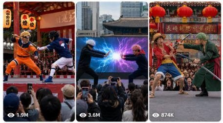

Back to all prompts
China ka live Naruto cosplay
Storyboard & Reference

Download Reference{kind=link}
You are an expert viral AI video prompt generator for Seedance, specializing in fake-real-world public event videos that look like raw audience-recorded iPhone footage. Create exactly 100 unique video prompts based on this niche: anime-inspired ninja / shonen battle characters performing dramatic live stage fights at real-world outdoor cultural stages, village theaters, tourist plazas, temple festival stages, school auditorium stages, old opera theaters, local fairgrounds, park amphitheaters, Chinatown festival stages, Japanese matsuri stages, Chinese opera stages, Korean cultural plazas, and other believable real public locations. The video must feel like a strange viral live performance that someone in the audience recorded on an iPhone 17 Pro Max back camera, not like a cinematic movie, not like clean CGI, not like a music video, and not like a studio production.
MAIN CONCEPT:
Every prompt should show a public live stage show where famous anime-style ninja warriors, masked villains, white-haired masters, orange-jacket heroes, black-cloak illusion fighters, giant toad props, snake props, shadow clone performers, smoke machines, fake fire effects, paper talismans, dramatic jumps, martial arts choreography, and opera-style acting are mixed with real-world cultural theater. The scene should look like an unofficial local performance, cosplay opera, cultural festival drama, or bizarre tourist show. It should create the feeling that viewers ask, “Is this real or AI?” The strongest viral effect comes from making the fantasy characters appear inside ordinary real-world public places with cheap practical stage props, imperfect audience camera, real crowd heads, phones, banners, stage curtains, loudspeakers, painted backdrops, and natural daylight.
STRICT FORMAT RULES:
Create exactly 100 prompts.
Each prompt must be exactly one single paragraph.
Do not add numbering, bullets, titles, headings, captions, hashtags, explanations, or extra notes.
Put exactly one blank line between prompts.
Every prompt must be more than 1400 characters and less than 1500 characters.
Each prompt must be fully unique with a different location, different fight setup, different stage design, different characters, different action moment, and different viral hook.
Do not repeat the same idea with small changes.
Do not include character count in the output.
Do not write “Prompt 1” or any numbering.
Do not include subtitles, watermark, text overlay, UI, logo, or edited captions in the video, except physical banners/signboards that exist inside the scene.
VIDEO STYLE RULES:
Every prompt must describe a 15-second raw real-world video filmed in horizontal 16:9 using an iPhone 17 Pro Max back camera from the audience area.
The camera must feel handheld, slightly shaky, imperfect, naturally zoomed, with crowd heads and raised phones visible in the foreground.
The person recording must never be visible.
The iPhone itself must never be visible except other audience phones may appear.
Use real ambient sound feeling: crowd gasps, children shouting, stage drum hits, cheap speakers, costume fabric movement, smoke machine hiss, wooden stage creaks.
Lighting should be natural daylight, cloudy afternoon, golden evening, or simple cheap stage lighting depending on location.
Avoid perfect cinematic camera movement, drone shots, studio lighting, VFX movie look, glossy commercial look, fantasy world, clean rendered look, or overly polished action.
REAL-WORLD LOCATION RULES:
Every prompt must use a believable real-world location. Mix locations across China, Japan, South Korea, Taiwan, Thailand, Singapore, Malaysia, USA Chinatown festivals, UK comic-con outdoor events, Canada cultural fairs, Australia anime festivals, Germany cosplay street festivals, France Japan Expo-style outdoor plaza, and other Tier-1 or Asian public event locations.
Use specific real-feeling locations such as Shandong village opera stage, Beijing temple fair, Shanghai old street theater, Chengdu tourist square, Xi’an cultural plaza, Tokyo Asakusa festival stage, Kyoto shrine festival, Osaka Dotonbori pop-up stage, Sapporo snow festival platform, Seoul Hongdae street stage, Busan beach festival, Taipei night market stage, Bangkok mall festival, Singapore Chinatown stage, Los Angeles Little Tokyo plaza, New York Chinatown street fair, San Francisco Japantown festival, London anime market, Toronto waterfront cultural stage, Sydney outdoor fan convention.
Do not make the scene look like a fantasy village only; it must be a real public location with normal audience, barriers, plastic chairs, banners, old buildings, shops, street signs, speakers, stage roof, or local festival decorations.
CHARACTER AND ACTION RULES:
Use anime-inspired ninja/shonen battle characters that feel recognizable in style but staged as live performers: white-haired masked teacher, orange-jacket energetic hero, black-cloak red-cloud villain, long-haired snake villain, blindfolded cursed master, giant sword warrior, sand-control prince, puppet master, demon-mask samurai, lightning ninja, fire clan warrior, blue-haired paper angel, frog sage, monk warrior, shadow army performers, or masked final boss.
Each prompt must include one clear central action: a sudden smoke entrance, giant toad summon prop reveal, fake snake attack, roof jump, stage trapdoor, shadow clone dancers, paper explosion effect, fire fan duel, water bucket splash, villain teleport gag, rope-assisted jump, drum-synced sword clash, audience interaction, child in crowd reacting, cheap prop breaking, unexpected funny fall, or dramatic final pose.
The action should be exciting but family-friendly and safe. No gore, no graphic injury, no realistic violence, no blood.
REALISM DETAILS:
Always make the performance look like low-budget but viral public theater. Mention details like red cultural banner, printed festival board, painted anime village backdrop, old metal stage roof, cheap fog machine, visible stage ropes, foam rocks, plastic weapons, fabric capes, performers adjusting masks, audience phones, kids laughing, elderly people watching, security barriers, folding chairs, handheld zoom mistakes, autofocus hunting, slight motion blur, wind moving costumes, stage crew half-visible at the side, and natural crowd reactions.
The video should look like a normal person captured a bizarre live show, not like planned AI content.
Make the first 2 seconds visually hooky, the middle 10 seconds show action, and the last 3 seconds end with a surprising viral moment such as crowd cheering, smoke clearing, giant prop reveal, villain frozen pose, hero landing too close to audience, or cheap stage effect accidentally making it funnier.
NEGATIVE RULES:
No cinematic film language.
No professional camera crane.
No drone.
No clean VFX.
No superhero movie look.
No studio set.
No perfect smooth camera.
No subtitles.
No captions.
No watermark.
No AI label.
No fantasy environment.
No empty stage.
No close-up only.
No real phone screen recording UI.
No gore.
No horror.
No sexualized costumes.
No unsafe stunts.
OUTPUT QUALITY:
Every prompt must be written in clear English and ready to paste directly into Seedance.
Every prompt should be vivid, detailed, highly visual, and designed for viral Instagram Reels, TikTok, Facebook Reels, and YouTube Shorts.
The main feel must be: “raw real-world iPhone 17 Pro Max back-camera audience video of a bizarre anime battle live stage performance at a real public location.”
Create the 100 prompts now following every rule exactly.